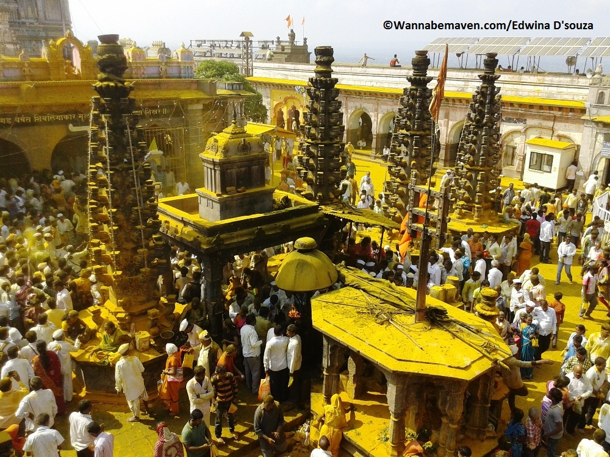

|  |
"Turmeric City" Jejuri Tourism Jejuri is a city in Pune district, Maharashtra. It is also known as Khandobari as the main temple dedicated to Lord Khandoba is situated here. A lively Maratha city, the locals continue to celebrate traditions & culture here with tumeric, Khandoba's favourite. It is known for lime deposits in its soil which have been mined and used as construction material for forts in the region. It is also known for the historic Makaji family of Jejuri. Recently, with news of the new Pune airport being built around the area, the city has attracted real estate opportunities.